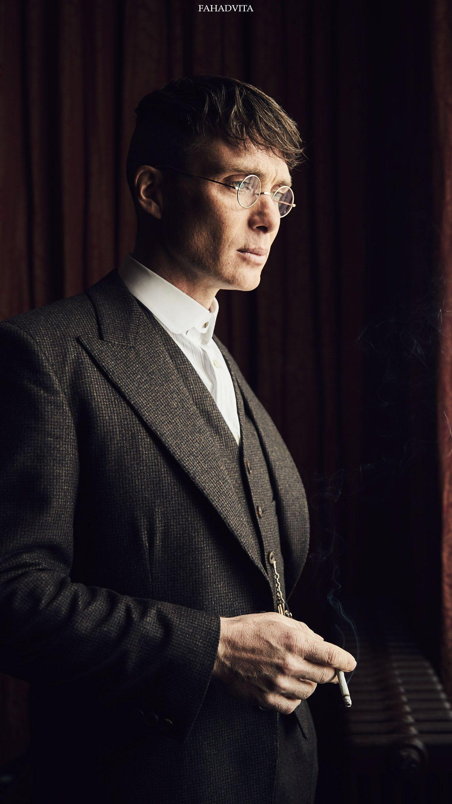

CILLIAN MORPHY

For the actor born Cillian Damien Murphy, see Killian Scott.
- Cillian Murphy (/ˈkɪliən/ KILL-ee-ən;[1] born 25 May 1976) is an Irish actor.
He made his professional debut in Enda Walsh's 1996 play Disco Pigs,
a role he later reprised in the 2001 screen adaptation.
His early notable film credits include the horror film 28 Days Later (2002),
the dark comedy Intermission (2003), the thriller Red Eye (2005),
the Irish war drama The Wind That Shakes the Barley (2006),
and the science fiction thriller Sunshine (2007).
He played a transgender Irish woman in the comedy-drama Breakfast on Pluto (2005),
which earned him a Golden Globe Award
Murphy began his collaboration with filmmaker Christopher Nolan in 2005
playing Dr. Jonathan Crane / Scarecrow in The Dark Knight trilogy (2005–2012)
as well as appearing in Inception (2010) and Dunkirk (2017) and portraying the lead role of
J. Robert Oppenheimer in the biopic Oppenheimer (2023).
He also gained prominence for his role as
Tommy Shelby in the BBC period drama series Peaky Blinders
and for starring in the horror sequel A Quiet Place Part II (2020).